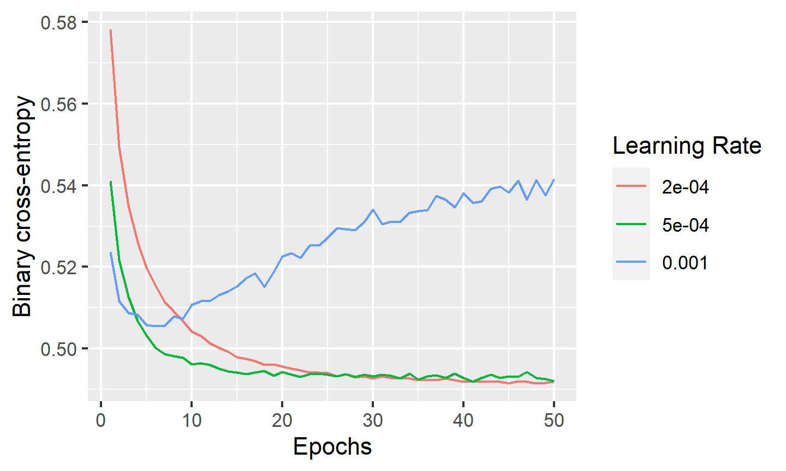
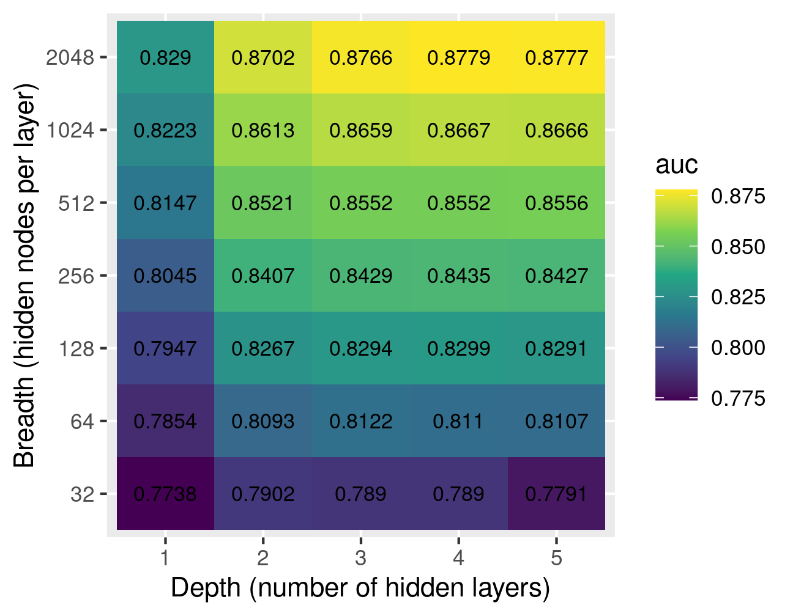

Chapter 3 GPU-accelerated machine learning using Keras
We will use the keras package for machine learning. The keras package allows us
to model the data using neural networks (NN); in this case, we will use a straightforward
Multilayer Perceptron (MLP) with an Rectified Linear Unit (ReLU) activation function on
all hidden nodes and a logistic activation function on the output node, thus giving a final
estimate between 0 and 1 of the probability that a given observation corresponds to the “signal”
process. The ReLu activation function, \(\mathrm{relu}(x) = \max(0,x)\), is chosen for its
simplicity and computational efficiency.
Note that in theory, an NN with sufficient breadth can approximate any function, even with just a single hidden layer (Asadi and Jiang 2020). However, we want a model that can learn the general characteristics of the signal and background processes from which our data is obtained. Therefore, to avoid overfitting, we withhold 20% of the training data in each epoch for validation. Additionally, 50% dropout is applied to each hidden layer, meaning that only half of the hidden nodes are used in each training batch. This has also been shown to reduce overfitting effectively (Srivastava et al. 2014).
3.1 Tuning the learning rate
The following code plots the binary cross-entropy (a loss metric for binary classification networks) after each training epoch for three different learning rates, using the Adam (Kingma and Ba 2014) optimizer. We will train networks with 3 hidden layers of 256 nodes each.
train_keras_history <- function(x, y, depth, breadth,
dropout = 0.5, learning_rate=0.0002, epochs = 50) {
model <- keras_model_sequential(input_shape = ncol(x))
# Hidden layers
for (layer in seq(depth)) {
model |> layer_dense(breadth, 'relu') |> layer_dropout(rate = dropout)
}
# Output layer (logistic activation function for binary classification)
model |> layer_dense(1, 'sigmoid')
# Compile model
model |>
keras::compile(
loss = 'binary_crossentropy',
optimizer = optimizer_adam(learning_rate = learning_rate),
metrics = metric_auc()
)
# A larger batch size trains faster but uses more GPU memory
history <- model |>
fit(x, y, epochs = epochs, batch_size = 8192, validation_split = 0.2)
# Clean-up
rm(model)
gc()
k_clear_session()
tensorflow::tf$compat$v1$reset_default_graph()
history
}# Train a 3x256 NN with three different learning rates
tensorflow::set_random_seed(42, disable_gpu = F)
if (!file.exists('cache/nn_results.RDdata')) {
history1 <- train_keras_history(x, y, 3, 256, learning_rate = 1e-3)
history2 <- train_keras_history(x, y, 3, 256, learning_rate = 5e-4)
history3 <- train_keras_history(x, y, 3, 256, learning_rate = 2e-4)
save(history1, history2, history3, file = 'cache/nn_results.RDdata')
}
load('cache/nn_results.RDdata')
tensorflow::set_random_seed(42, disable_gpu = F)# Plot metric over the number of epochs
tibble(
epoch = seq(50),
`1e-3` = history1$metrics$val_loss,
`5e-4` = history2$metrics$val_loss,
`2e-4` = history3$metrics$val_loss
) |>
pivot_longer(-epoch,'lr',values_to = 'loss') |>
mutate(lr = as.numeric(lr)) |>
ggplot(aes(epoch,loss, color=as.factor(lr))) +
geom_line() +
xlab('Epochs') +
ylab('Binary cross-entropy') +
labs(color='Learning Rate')
The results show that a smaller learning rate provides smoother loss as a function of the number of training epochs, but takes longer to train. Nevertheless, even the lowest learning rate shown above results in reasonably fast convergence. On the other hand, a learning rate that is too large may lead to non-convergence of the loss function. Based on the above results, we will use a training rate of \(2\times10^{-4}\) for all subsequent modelling.
3.2 Effect of MLP depth and breadth
The following function trains an MLP with the specified
number of hidden layers (depth) and nodes per hidden layer (breadth),
and returns the model and training history.
We will use the Adam (Kingma and Ba 2014) optimizer with a learning rate of \(2\times 10^{-4}\) and 50 epochs.
# Tuning values given defaults are not included in our parameter search for this
# project.
train_keras_auc <- function(x, y,
depth, breadth,
dropout = 0.5, learning_rate = 0.0002,
epochs = 50) {
cat('DNN: ', depth, 'x', breadth, '\n')
model <- keras_model_sequential(input_shape = ncol(x))
# By default, Keras applies Glorot uniform initialization for weights
# and zero initialization for biases. Glorot uniform initialization
# samples weights from Uniform(-sqrt(6/n),sqrt(6/n)) where n is the
# sum of in and out nodes between two input/hidden/output layers.
# Hidden layers
for (layer in seq(depth)) {
model |> layer_dense(breadth, 'relu') |> layer_dropout(rate = dropout)
}
# Output layer (logistic activation function for binary classification)
model |>
layer_dense(units = 1, activation = 'sigmoid')
# Compile model
model |>
keras::compile(
loss = 'binary_crossentropy',
optimizer = optimizer_adam(learning_rate = learning_rate),
metrics = metric_auc()
)
# A larger batch size trains faster but uses more GPU memory
history <- model |>
fit(x, y, epochs = epochs, batch_size = 8192, validation_split = 0.2)
ypred <- model |> predict(x, batch_size = 8192) |> as.vector()
auc <- roc(y,ypred) |> auc() |> as.numeric()
rm(model)
gc()
k_clear_session()
tensorflow::tf$compat$v1$reset_default_graph()
auc
}The following code computes and plots the AUC for NNs with 1 to 5 hidden layers and from 16 to 2048 hidden nodes in each hidden layer:
# Try NN training for different NN depths and breadths. Cache using .RData file.
tensorflow::set_random_seed(42, disable_gpu = F)
if (!file.exists('cache/nn_results2.RDdata')) {
nn_results <- tibble(depth = integer(), breadth = integer(), auc = numeric())
for(l in 1:5) { # depth: number of hidden layers
for (n in 2^c(5:11)) { # breadth: hidden nodes per layer
nn_results <- nn_results |>
add_row(depth = l, breadth = n, auc = train_keras_auc(x, y, l, n))
}
}
save(nn_results, file = 'cache/nn_results2.RDdata')
}
load('cache/nn_results2.RDdata')
tensorflow::set_random_seed(42, disable_gpu = F)# Heatmap of AUC vs depth and breadth
nn_results |> ggplot(aes(as.factor(depth), as.factor(breadth), fill = auc)) +
geom_tile() +
geom_text(aes(label = round(auc,4)), color = "black", size = 3) +
scale_fill_viridis_c() +
xlab('Depth (number of hidden layers)') +
ylab('Breadth (hidden nodes per layer)')
The results show that for NNs with at least 64 nodes per hidden layer, there is little difference between having three layers or more; however, there is a slight advantage to having three hidden layers compared to two. In all cases, the widest NN at each depth provides the best AUC. Therefore, the 3x2048 NN appears to provide the best trade-off between network complexity and AUC. If memory or compute resources are limited, a 2x512 NN also appears to give reasonable estimation power.
3.3 Dropping high-level features
Since the high-level features in the HIGGS dataset are derived from the other, low-level features, it is clear that a good model should be able to learn the data without use of these features. The following code trains a 3x2048 NN on the HIGGS using just the low-level features:
# Train 3x2048 NN using low-level features only. Cache the AUC value.
tensorflow::set_random_seed(42, disable_gpu = F)
if (!file.exists('cache/nn_results3.RDdata')) {
auc_low_only <- train_keras_auc(x[,1:21], y, 3, 2048, learning_rate = 2e-4)
save(auc_low_only, file='cache/nn_results3.RDdata')
}
load('cache/nn_results3.RDdata')
tensorflow::set_random_seed(42, disable_gpu = F)The following code displays the AUC for the 3x2048 NN with and without the high-level features:
tibble(
Features = c('All', 'Low-level only'),
AUC = c(
nn_results |> filter(breadth == 2048 & depth == 3) |> pull(auc),
auc_low_only
)
) |> kable(align = 'lr', booktabs = T, linesep = '')| Features | AUC |
|---|---|
| All | 0.8766273 |
| Low-level only | 0.8663024 |
The AUC for the low-level-only NN is only slightly lower than that for the full network, demonstrating that the NN is able to learn the complex non-linear relationships between the independent and dependent variables on it its own without the need for additional derived variables.